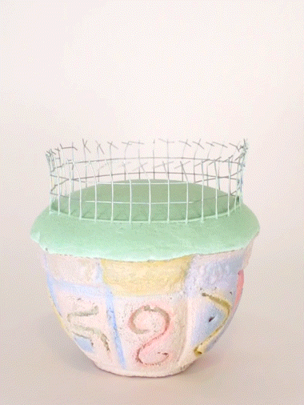

Naomi Treistman
Domestic Taxonomy

Naomi Treistman’s “Domestic Taxonomy” encompasses a series of sculptures that reflect upon the artificiality of modern culture. Every backyard has the same color, whether it is grass or faux turf, a suburban life demands an outdoor green carpet. Landscapers commodify greenery as a product through which humans can enjoy nature. Even more, city people do no less in decorating their apartments with indoor potted plants. As such it seems that the setting doesn’t really matter. Whether in the rural, urban or domestic sphere, we are all under the influence of a post-imperial rule that abstracts the nature of things through a value system that aims for possession rather than essential existence.
Analyzing this idea from the perspective of the domestic environment, Treistman questions the reality of the new mundane by reducing it to vessels (potted plants) made from playful materials that abstract the limit between artificial and organic matter. The artist’s potted plants, vessels, or contained sculptures, intend to seize the tensions between needs and commodities, as well as story absorbing and story telling devices. Detaching their meaning from the notions of plant or object, they embrace a new artificial nature as means of emancipation.
Domestic Taxonomy Collection
Naomi Treistman
Hang in there
Naomi Treistman
Polyurethane, wire, sillicon rubber, and clay
35" x 18" x 5" - 2020
Sisyphus
Naomi Treistman
Polyurethane, clay, acrylic paint,
flocking and varnish
11" x 5" x 6" - 2020
American Milkweed
Naomi Treistman
Castilene, EPS foam glue, polyurethane, wire,
packaging peanuts, aqua-resin and acrylic paint
8" x 4" x 4" - 2020
Grotto
Naomi Treistman
Wire, castilene, and silicon rubber
12" x 6" x 6" - 2020
Peripetia
Naomi Treistman
Polyurethane, wire, rope,
castilene and silicone rubber
15" x 5" x 5" - 2020

The Yarda
Naomi Treistman
Polyurethane, aqua-resin, acrylic paint,
flocking and wire
15" x 5" x 5" - 2020
Wire Transfer
Naomi Treistman
Polyurethane, polymer, wire,
acrylic paint and flocking
9" x 10" x 5" - 2020
House
Naomi Treistman
Polyurethane and paper tag
5" x 9" x 9" - 2020
TPP
Naomi Treistman
Polyurethane, wire, castilene, aqua-resin,
polymer, acrylic paint and varnish
25" x 14" x 9" - 2020